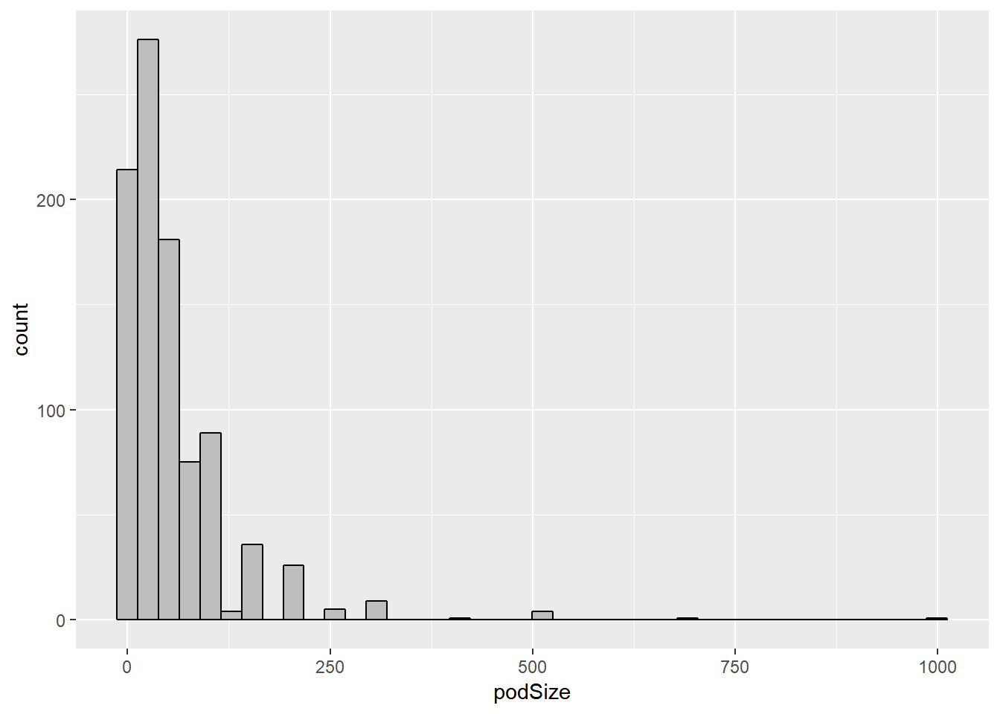
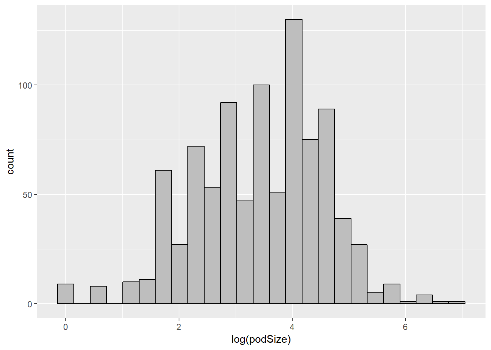
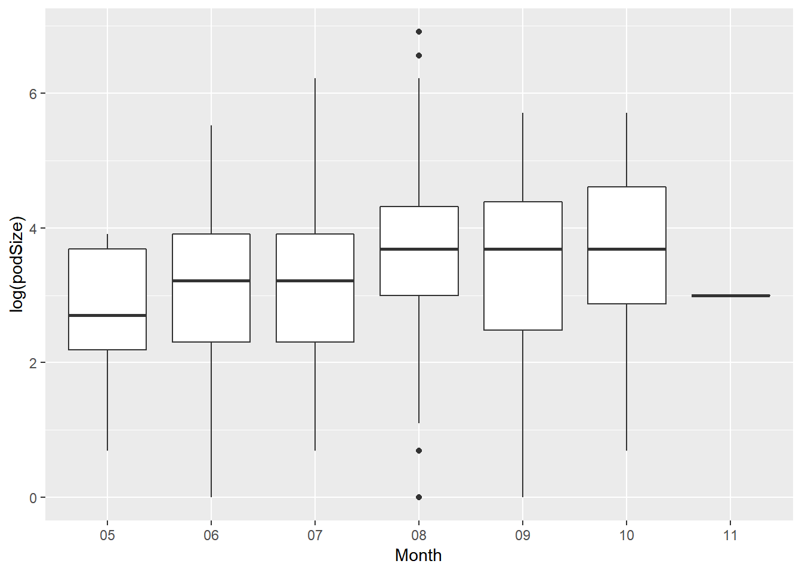
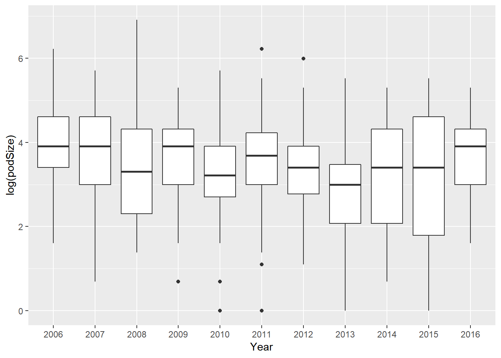
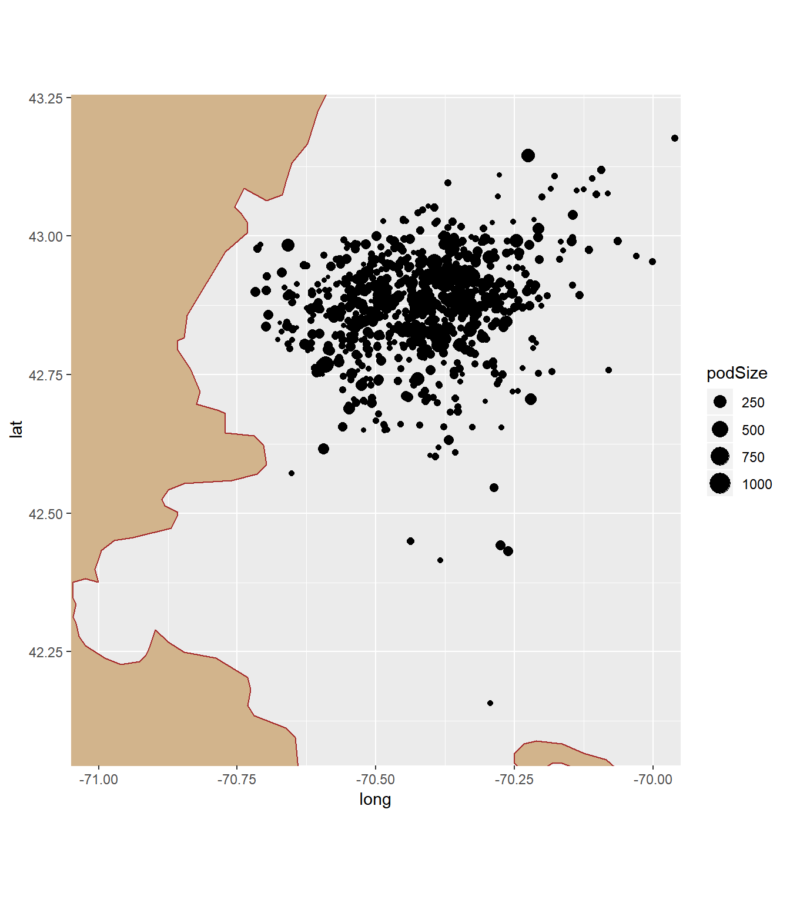
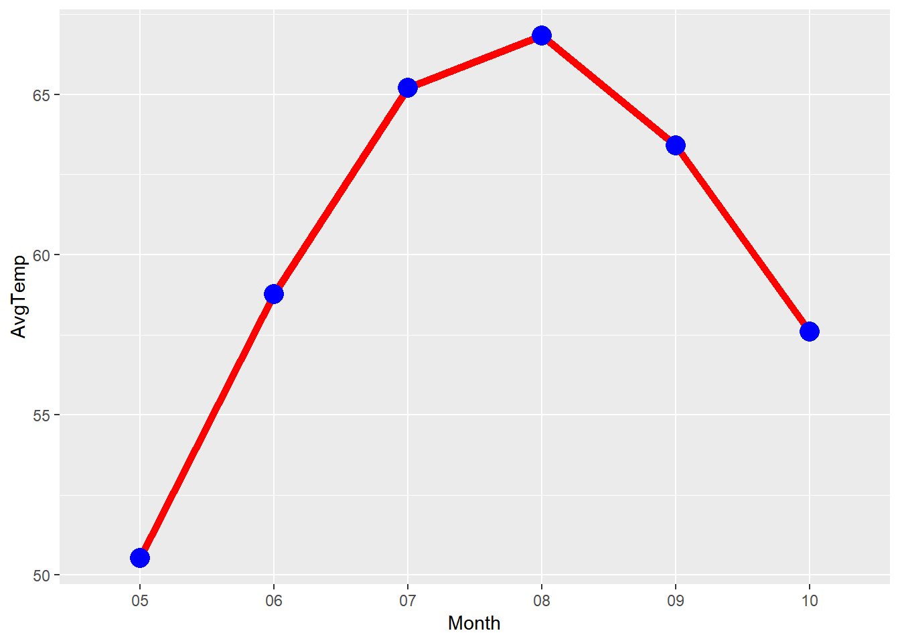
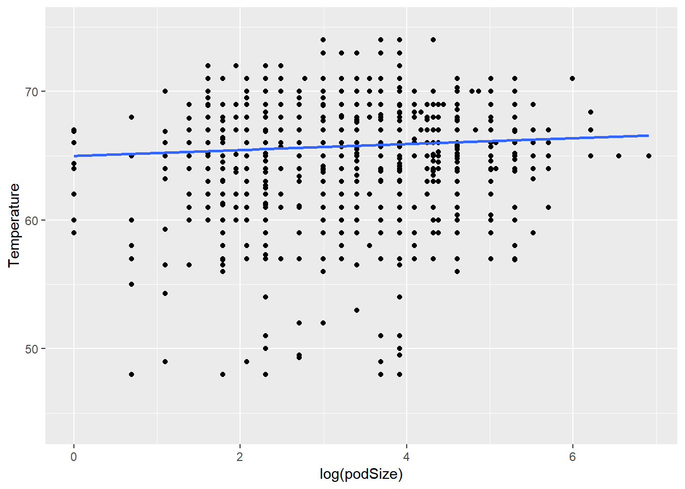

4 Part I - Dolphins
4.1 Introduction
4.1.1 Topic
Wittenberg’s Marine Science major Heddie Samuelson has graciously provided data from her research on dolphins. Dolphins often swim together in “pods”, and Heddie wants to know how the pod size varies, and how pod size might be related to other variables.
4.1.2 Data
In the Dolphins subfolder are two files….
- In the Sightings file, the cases are particular sightings of dolphin pods in a particular area on the north Atlantic coast of the US. Variables include the following:
- Date and Time of the sighting
- Location of the sighting, specified by Latitude and Longitude
- Estimated pod size (in the variable labeled “#”), i.e., the number of dolphins in the pod
- Species and Common Name of the variety of dolphins sighted
Note that there are 11 sheets - one for each year from 2006 through 2016.
- There are three sheets in the SeaTemps file. Ignore the “AVERAGE SST” sheet (which includes monthly averages and a graph that you will probably do anyway) and “Sheet2” (which duplicates one year’s data in Sheet1). In Sheet1 there are four similar variables for each of the 11 years:
- date
- sea surface temperature in Fahrenheit, for that date
- sea surface temperature in Celsius, for that date
- average sea surface temperature in Celsius, for that month (typically listed on the first day of the month)
Note that there are lots of missing data and blank columns, and that all 11 years of sea temps are on this one sheet. Note also that there are different numbers of rows for the different years.
4.2 Data Wrangling
Before making my analysis, I loaded the following packages:
library(tidyverse)
library(readxl)
library(mosaic)
library(knitr)
library(maps)Since the 2006 sheet is slightly different from the other sheets (it has 2 extra rows below the data), I read in this sheet separately.
Sight06 <- read_excel("~/Data229/Project/Dolphins/Sightings.xlsx", sheet = "2006", n_max = 62)
Sight06 <- Sight06 %>%
select(Date, Time, Latitude, Longitude, "#") %>%
mutate(Date = as.Date(Date))Then, a function to read in the sheets from 2007 to 2016 was created. Beside from importing the plain datasets, I also did some wrangling to make it look better.
Sightings <- function(sheetNum){
SightTable <- read_excel("~/Data229/Project/Dolphins/Sightings.xlsx", sheet = sheetNum)
SightTable <- SightTable %>%
select(Date, Time, Latitude, Longitude, "#") %>%
mutate(Date = as.Date(Date))}After the function was defined, it’s now time to get the data.
Sight07 <- Sightings(2)
Sight08 <- Sightings(3)
Sight09 <- Sightings(4)
Sight10 <- Sightings(5)
Sight11 <- Sightings(6)
Sight12 <- Sightings(7)
Sight13 <- Sightings(8)
Sight14 <- Sightings(9)
Sight15 <- Sightings(10)
Sight16 <- Sightings(11)My goal is to have an output table with 5 variables Date, Time, Latitude, Longitude and podSize. I used 10 full_join()’s to join 11 tables to get my table. I also renamed column 5 “podSize”.
Sights <- Sight06 %>%
full_join(Sight07, by = c("Date", "Time", "Latitude", "Longitude", "#")) %>%
full_join(Sight08, by = c("Date", "Time", "Latitude", "Longitude", "#")) %>%
full_join(Sight09, by = c("Date", "Time", "Latitude", "Longitude", "#")) %>%
full_join(Sight10, by = c("Date", "Time", "Latitude", "Longitude", "#")) %>%
full_join(Sight11, by = c("Date", "Time", "Latitude", "Longitude", "#")) %>%
full_join(Sight12, by = c("Date", "Time", "Latitude", "Longitude", "#")) %>%
full_join(Sight13, by = c("Date", "Time", "Latitude", "Longitude", "#")) %>%
full_join(Sight14, by = c("Date", "Time", "Latitude", "Longitude", "#")) %>%
full_join(Sight15, by = c("Date", "Time", "Latitude", "Longitude", "#")) %>%
full_join(Sight16, by = c("Date", "Time", "Latitude", "Longitude", "#"))
colnames(Sights)[5] <- "podSize"It might actually be a better idea to split the Day column into 3 columns Year, Month and Day; since I’m going to find out how the pod size distribution varies by time of year and across the years.
SightsYMD <- Sights %>%
separate(Date, into = c("Year", "Month", "Day"))Now I finally have the table that I wanted. Let’s take a quick look at its first few rows.
kable(SightsYMD %>% head())| Year | Month | Day | Time | Latitude | Longitude | podSize |
|---|---|---|---|---|---|---|
| 2006 | 07 | 25 | 1519 | 42.70759 | -70.50612 | 50 |
| 2006 | 07 | 26 | 1645 | 42.85215 | -70.32297 | 70 |
| 2006 | 07 | 26 | 1632 | 42.84765 | -70.32412 | 40 |
| 2006 | 07 | 29 | 1431 | 42.73842 | -70.52207 | 20 |
| 2006 | 07 | 29 | 1445 | 42.74283 | -70.51724 | 10 |
| 2006 | 08 | 02 | 1615 | 42.90334 | -70.34932 | 30 |
4.3 Data Exploring
4.3.1 Pod Size
Now it’s time to analyze. First, I wanted to check out the pod size distribution.
SightsYMD %>%
ggplot(mapping = aes(podSize)) +
geom_histogram(bins = 40, color = "black", fill = "grey")
The shape of the distribution of pod size is skewed to the right, so I decided to use a log transformation and therefore model the log(podSize).
SightsYMD %>%
ggplot(mapping = aes(log(podSize))) +
geom_histogram(bins = 25, color = "black", fill = "grey")
Sure enough! The log(podSize) distribution looks normalish
At this time, I’d like to check out factors that affect pod size
4.3.1.1 Time of the Year
Below is a log(podSize) vs Month boxplot:
SightsYMD %>%
ggplot(mapping = aes(x= Month, y = log(podSize))) +
geom_boxplot()
The first thing I noticed was all the data was recorded in 8 months from May to November. The mean log(podSize) is about the same in those months. The log(podSize) are highest in August, September and October, meaning that the number of dolphins in the pod is biggest during those month. On the other hand, May is the month that has the lowest mean log(podSize), and this indicates the estimated size is smallest in May.
4.3.1.2 Year (2006-2016)
Next, let’s find out how does pod size vary across the years.
SightsYMD %>%
ggplot(mapping = aes(x = Year, y = log(podSize))) +
geom_boxplot()
Overall, the mean log(podSize) doesn’t seem to be very different throughout the years. So year seems to have a tiny or even no impact on pod size. Some years (2009, 2016,…) the number of dolphins is slightly bigger than the others - as their mean log(podSize) are the highest (about 4). On the other hand, the lowest mean log(podSize) is about 3 (in 2013), and this is not that much smaller than the other ones.
4.3.1.3 Time of the Day
In order to see how does pod size vary by time of the day, I compared the log(podSize) of 4 different periods:
- Morning (before 11:00)
- Noonish (11:00 - 14:00)
- Afternoon (14:00 - 17:00)
- Evening (after 17:00)
Here are the summary statistics for each one of the period I just mentioned:
Morning <- SightsYMD %>%
filter(Time <= 1100)
kable(favstats(~ log(podSize), data = Morning))| min | Q1 | median | Q3 | max | mean | sd | n | missing | |
|---|---|---|---|---|---|---|---|---|---|
| 0 | 2.484907 | 3.401197 | 4.317488 | 6.214608 | 3.369225 | 1.174626 | 152 | 0 |
Noonish <- SightsYMD %>%
filter(Time > 1100 & Time <= 1400)
kable(favstats(~ log(podSize), data = Noonish))| min | Q1 | median | Q3 | max | mean | sd | n | missing | |
|---|---|---|---|---|---|---|---|---|---|
| 0 | 2.70805 | 3.68888 | 4.60517 | 5.703782 | 3.488528 | 1.214849 | 255 | 0 |
Afternoon <- SightsYMD %>%
filter(Time > 1400 & Time <= 1700)
kable(favstats(~ log(podSize), data = Afternoon))| min | Q1 | median | Q3 | max | mean | sd | n | missing | |
|---|---|---|---|---|---|---|---|---|---|
| 0 | 2.70805 | 3.401197 | 4.248495 | 6.907755 | 3.425035 | 1.069065 | 472 | 1 |
Evening <- SightsYMD %>%
filter(Time > 1700)
kable(favstats(~ log(podSize), data = Noonish))| min | Q1 | median | Q3 | max | mean | sd | n | missing | |
|---|---|---|---|---|---|---|---|---|---|
| 0 | 2.70805 | 3.68888 | 4.60517 | 5.703782 | 3.488528 | 1.214849 | 255 | 0 |
Overall, mean and median log(podSize) are about the same for all 4 periods of the day (around 3.5). So we can say that time of the day doesn’t affect pod size at all. The highest log(podSize) is 6.9 - in the afternoon.
4.3.1.4 Location
USA <- map_data("usa")
States <- map_data("state")colnames(SightsYMD)[5] <- "lat"
colnames(SightsYMD)[6] <- "long"This map illustrates the location of the sighting.
USA %>%
ggplot(mapping = aes(x = long, y = lat)) +
geom_polygon(mapping = aes(group = group), color = "brown", fill = "tan") +
geom_point(data = SightsYMD, mapping = aes(x = long, y = lat, size = podSize)) +
coord_fixed(xlim = c(-71, -70), ylim = c(42.1, 43.2))
All the location of sighting is in the Atlantic coast of the US. It seems like locations that have longitude from -70.6 to -70.25 and latitude from 42.75 to 43 are where pod size is the largest.
4.3.2 Sea Surface Temperature
The next thing I did was to look at the sea surface temperature.
First, I loaded the SeaTemps data file.
SeaTemps <- read_excel("~/Data229/Project/Dolphins/SeaTemps.xlsx", sheet = "Sheet2")
SeaTemps <- SeaTemps[,1:2]
SeaTemps <- SeaTemps %>%
filter(`SST (deg F)` != "N/A") %>%
mutate(Temperature = as.double(`SST (deg F)`), Date = as.Date(Date)) %>%
select(-`SST (deg F)`)Now let’s look at the average temperature in each month. Here are the numerical and visual summaries of average sea surface temperature.
kable(AvgTemp <- SeaTemps %>%
separate(Date, into = c("Year", "Month", "Day")) %>%
group_by(Month) %>%
summarise(AvgTemp = mean(Temperature)))| Month | AvgTemp |
|---|---|
| 05 | 50.51983 |
| 06 | 58.76095 |
| 07 | 65.20261 |
| 08 | 66.83306 |
| 09 | 63.39961 |
| 10 | 57.59091 |
AvgTemp %>%
ggplot(mapping = aes(x = Month, y = AvgTemp, group = "")) +
geom_line(color = "red", size = 2) +
geom_point(color = "blue", size = 5)
The average sea surface temperature is highest in August, at about 67 degree F. July, August and September are the 3 months that sea surface is warmer, since they are have mean temperature over 63 degree. In contrast, the surface is cooler in May, June and October (all under 60 degree); and May is the coldest month with average temperature of slightly above 50 F.
4.3.3 Pod Size vs Temperature
Sights <- Sights %>%
select(Date, podSize) %>%
mutate(Date = as.Date(Date))
PodTemp <- full_join(Sights, SeaTemps, by = "Date")PodTemp %>%
ggplot(mapping = aes(y = Temperature, x = log(podSize))) +
geom_point() +
stat_smooth(method = "lm", se = FALSE)
lm(Temperature ~ log(podSize), data = PodTemp)
Call:
lm(formula = Temperature ~ log(podSize), data = PodTemp)
Coefficients:
(Intercept) log(podSize)
65.0016 0.2285 The plot above reveals a positive but weak and linearish relationshoip between log(podSize) and Temperature. This means larger log(podSize) is associated with warmer sea surface temperature. The regression equation is Temp^ = 0.23*log(podSize) + 65. It has a slope of 0.23, which indicates every factor of e in pod size is associated with an increase of 0.23 degree F in temperature.